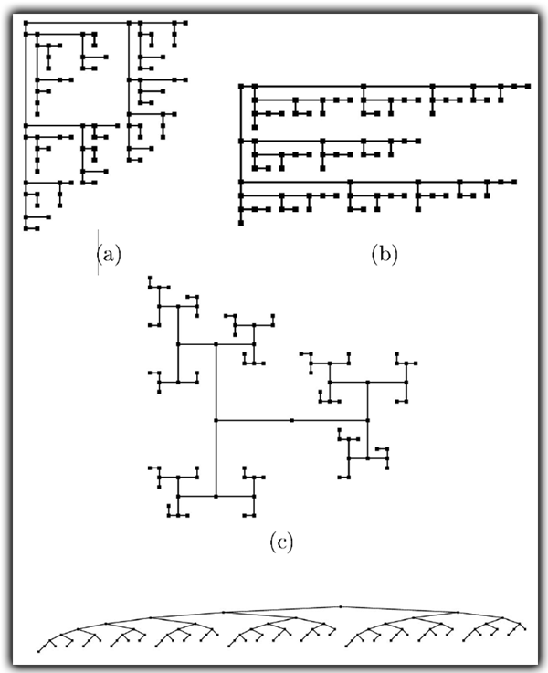

|
We ran an experimental study on four most representative algorithms for drawing binary trees. Our study was conducted on randomly-generated, unbalanced, and AVL binary trees with up to 50K nodes, on Fibonacci trees with up to 46K nodes, on complete trees with up to 65K nodes, and on real-life molecular combinatory trees with up to 50K nodes. We compared the performance of the algorithms with respect to five quality measures: Area, Aspect Ratio, Uniform Edge Length, Angular Resolution, and Farthest Leaf. |